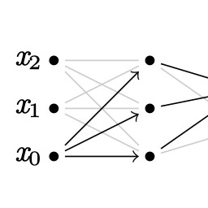
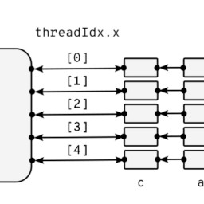
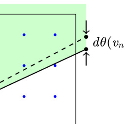
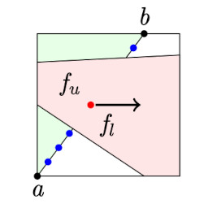
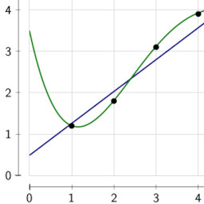
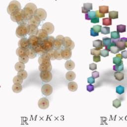
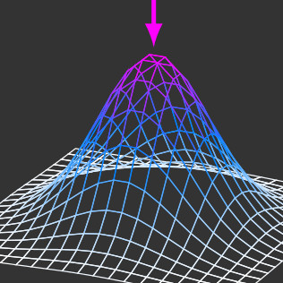

PhD Candidate and Senior Research Fellow at NISER, Bhubaneswar
Some talks I have presented in past, although some talks before 2021 are missing either because I didn't make or lost the files. Talks are listed alphabetically.
|  | Automatic diffentiation
June 2022, NISER, Bhubaneswar |
|  | CUDA C Programming
August 2021, NISER, Bhubaneswar |
|  | Introduction to differentiable
rendering
September 2022, NISER, Bhubaneswar |
|  | Differentiable rendering
with edge sampling
July 2022, NISER, Bhubaneswar |
|  | Information
theory and bayesian learning
December 2021, NISER, Bhubaneswar |
|  | Irregular laten grid
for shape reconstruction
June 2022, NISER, Bhubaneswar |
|  | Introduction to PyTorch
with VAE
January 2022, NISER, Bhubaneswar |
Notes are evolving documents that reside on the web and act as a reference. In some sense, it is like "explained config files" and in others, it is some cool fact about the tools I use that I don't want to forget. These are my public notes for my own reference. Feel free to take a look, and let me know if you find these helpful.
Comment about website: It is sad that people don't write HTML these days. Frameworks like React, Slevte, Vue, etc on top of JavaScript write HTML, with layer and layers of abstraction. Gone are the days when people used to write HTML in their text editors for fun. And because, they had something to share with the world (not because they wanted to profit off of it!) We all wrote HTML by hand, we looked at the source of HTML files others had written and we all learned from each other. This website is reminiscent of the old days and old ways we miss so much.
The road to wisdom? Well, it's plain and simple to express: Err and err and err again, but less and less and less.